admin@kaiki.example και password.
Kaiki
Πώς στήνεται ένα Kaiki που το ανοίγει όλη η ομάδα από το δίκτυο του γραφείου, και πώς φτιάχνουμε έναν καινούργιο διοργανωτή από το μηδέν και τον δουλεύουμε σαν να είμαστε εμείς.
Σεπτέμβριος 2026 · ενημερωμένος στις 23 Σεπτεμβρίου
Κάθε βήμα εδώ έχει εκτελεστεί. Οι εικόνες τραβήχτηκαν από πρόγραμμα που
περπάτησε αυτή ακριβώς τη διαδρομή, με τη σειρά.
Αν κάποιο βήμα σπάσει, το έγγραφο δεν χτίζεται.
Το μέρος Α το κάνει ένας άνθρωπος, μία φορά, στο μηχάνημα που θα φιλοξενήσει τις δοκιμές. Από το μέρος Β και μετά συμμετέχουν όλοι, ο καθένας από τον δικό του υπολογιστή — δεν χρειάζεται να εγκαταστήσει κανείς τίποτα.
Τρέχει σε έναν υπολογιστή γραφείου, με βάση δεδομένων SQLite και χωρίς αντίγραφα ασφαλείας. Σκοπός του είναι να βρούμε τι δεν δουλεύει. Μη βάλετε αληθινά δεδομένα πελατών — ούτε ονόματα, ούτε τηλέφωνα, ούτε αριθμούς διαβατηρίων.
Όλα τα μηνύματα που στέλνει το Kaiki πιάνονται από ένα εργαλείο στο ίδιο μηχάνημα,
το Mailpit, και τα βλέπετε όλοι σε μια σελίδα:
http://192.168.1.43:8025. Αυτό είναι σκόπιμο: δοκιμάζετε με επινοημένες
διευθύνσεις πελατών, και δεν θέλουμε να φύγει «η κράτησή σας επιβεβαιώθηκε» σε
άγνωστο άνθρωπο. Όπου ο οδηγός λέει «ελέγξτε το email», εννοεί εκεί.
Κάθε email φεύγει από τη διεύθυνση της πλατφόρμας, με το όνομα του διοργανωτή ως αποστολέα, και με «Απάντηση προς» τη διεύθυνση του διοργανωτή. Στο Mailpit θα το δείτε στα «From» και «Reply-To» κάθε μηνύματος.
Η κράτηση προχωράει μέχρι το ταμείο και σταματάει εκεί. Δεν χρειάζεται κάρτα και δεν κινείται χρήμα. Το πρόσθετο WordPress επίσης μένει έξω από αυτόν τον γύρο. Ό,τι άλλο υπάρχει, δοκιμάζεται κανονικά.
Ένας άνθρωπος, μία φορά, στο μηχάνημα που θα φιλοξενήσει τις δοκιμές. Οι υπόλοιποι δεν εγκαθιστούν τίποτα.
Windows, και τρία εργαλεία. Αν υπάρχουν ήδη, προσπεράστε στο επόμενο.
| Τι | Έκδοση | Πού |
|---|---|---|
| Git | οποιαδήποτε | git-scm.com |
| PHP | 8.4 ή νεότερη | windows.php.net — «Thread Safe», x64 |
| Node.js | 20 ή νεότερη | nodejs.org |
Με 8.3 δεν ξεκινάει τίποτα: ο έλεγχος εξαρτήσεων σταματάει με μήνυμα για την
έκδοση. Αν έχετε ήδη μια παλιότερη PHP στο μηχάνημα, δεν χρειάζεται να τη
βγάλετε — αρκεί οι εντολές να δείχνουν στη νέα. Σε αυτό το μηχάνημα η 8.4
βρίσκεται στο C:\Users\Mike\php84, και το script εκκίνησης το ξέρει.
Ανοίξτε ένα PowerShell — απλό, όχι διαχειριστή — και δώστε τα παρακάτω με τη σειρά. Η τρίτη εντολή αργεί δύο με τρία λεπτά την πρώτη φορά.
git clone https://github.com/mikmikfil/kaiki.git cd kaiki
Αν τον έχετε ήδη, αρκεί git pull μέσα στον φάκελο.
composer install npm install npm run build
Το npm run build φτιάχνει τα αρχεία εμφάνισης του πίνακα. Χωρίς
αυτό ο πίνακας ανοίγει αλλά δείχνει άστυλος.
copy .env.example .env php artisan key:generate
Βρείτε την πρώτα:
ipconfig | findstr IPv4
IPv4 Address. . . . . . . . . . . : 192.168.1.43
Ανοίξτε το αρχείο .env με σημειωματάριο και αλλάξτε
δύο γραμμές, βάζοντας τη δική σας διεύθυνση:
APP_URL=http://192.168.1.43:8000 KAIKI_HOSTED_HOST=192.168.1.43:8001
Στο ίδιο αρχείο, τρεις γραμμές ακόμη:
MAIL_MAILER=smtp MAIL_HOST=127.0.0.1 MAIL_PORT=1025
php artisan migrate:fresh --seed
Φτιάχνει δύο έτοιμους διοργανωτές με σκάφη, εκδρομές και κρατήσεις, ώστε να υπάρχει κάτι να κοιτάξετε από την πρώτη στιγμή. Τον δικό μας διοργανωτή θα τον φτιάξουμε από το μηδέν στο μέρος Γ.
Από github.com/axllent/mailpit/releases, το αρχείο
mailpit-windows-amd64.zip. Βγάλτε το mailpit.exe
και βάλτε το στον φάκελο tools\ μέσα στο kaiki.
Χωρίς αυτό οι συνάδελφοι δεν θα συνδεθούν, όσο σωστά κι αν τρέχουν όλα. Τα Windows μπλοκάρουν από προεπιλογή κάθε εισερχόμενη σύνδεση. Δεξί κλικ στο μενού έναρξης, «Terminal (Admin)», και μία φορά:
netsh advfirewall firewall add rule name="Kaiki panel 8000" dir=in action=allow protocol=TCP localport=8000 profile=private netsh advfirewall firewall add rule name="Kaiki guest 8001" dir=in action=allow protocol=TCP localport=8001 profile=private netsh advfirewall firewall add rule name="Kaiki email 8025" dir=in action=allow protocol=TCP localport=8025 profile=private
Το profile=private ανοίγει μόνο στο δίκτυο του γραφείου — όχι σε
δημόσιο WiFi.
Μία εντολή, από τον φάκελο kaiki. Ανοίγει πέντε παράθυρα.
powershell -ExecutionPolicy Bypass -File tools\start-testing.ps1
Τα πέντε είναι: ο πίνακας, οι σελίδες επισκεπτών, ο εργάτης ουράς,
ο χρονοπρογραμματιστής, και το εργαλείο email. Το script διαβάζει μόνο του τη
διεύθυνση του μηχανήματος και σας τη δείχνει, και προειδοποιεί αν ξεχάσατε το
.env ή το τείχος προστασίας.
Οι προσκλήσεις, οι επιβεβαιώσεις κρατήσεων και τα εισιτήρια δεν στέλνονται απευθείας — μπαίνουν σε ουρά. Χωρίς τον εργάτη κάθονται εκεί για πάντα και δεν εμφανίζεται κανένα μήνυμα σφάλματος πουθενά· απλώς δεν έρχεται ποτέ τίποτα. Σε αυτό το μηχάνημα είχαν μαζευτεί 175 εργασίες πριν το προσέξει κανείς. Αν κάτι «δεν έφτασε», κοιτάξτε πρώτα ότι αυτό το παράθυρο τρέχει.
Ανοίξτε στον φυλλομετρητή του ίδιου μηχανήματος τη διεύθυνση που σας έδειξε το script. Αν φορτώνει η σελίδα εισόδου, το μισό είναι έτοιμο· το άλλο μισό είναι να ανοίξει από άλλον υπολογιστή, που είναι το μέρος Β.
Τίποτα να εγκαταστήσει κανείς. Ένας φυλλομετρητής και τρεις διευθύνσεις — και το μηχάνημα του μέρους Α ανοιχτό.
Αντικαταστήστε το 192.168.1.43 με τη διεύθυνση που σας έδειξε το script
εκκίνησης. Θα αλλάξει αν το μηχάνημα ξανασυνδεθεί στο δίκτυο.
| Τι | Διεύθυνση | Ποιος τη χρειάζεται |
|---|---|---|
| Ο πίνακας | http://192.168.1.43:8000/app |
Ο διοργανωτής και η ομάδα του |
| Οι σελίδες επισκεπτών | http://192.168.1.43:8001/{slug} |
Όποιος παίζει τον πελάτη |
| Τα email | http://192.168.1.43:8025 |
Όλοι |
Η δοκιμαστική βάση έρχεται με έναν διοργανωτή που δουλεύει ήδη μια σεζόν, ώστε να
υπάρχει κάτι να δείτε πριν φτιάξετε τον δικό σας. Κωδικός σε όλους:
password.
| Λογαριασμός | Ρόλος | Πού μπαίνει |
|---|---|---|
maria@aegean-blue.example |
Ιδιοκτήτρια | /app |
giorgos@aegean-blue.example |
Διαχειριστής | /app |
nikos@aegean-blue.example |
Πλήρωμα | /app |
admin@kaiki.example |
Διαχειριστής πλατφόρμας | /admin |
Ο admin@kaiki.example μπαίνει στο /admin και παίρνει
403 στο /app. Η maria το αντίστροφο.
Δεν είναι σφάλμα: ο διαχειριστής της πλατφόρμας δεν ανήκει σε καμία επιχείρηση,
και ο διοργανωτής δεν βλέπει τους άλλους διοργανωτές. Αν δείτε αυτό το 403,
κοιτάξτε ποιος είναι συνδεδεμένος πριν το αναφέρετε. Ο μόνος δρόμος της πλατφόρμας
μέσα σε έναν διοργανωτή είναι το «Σύνδεση ως» (μέρος Γ).
Το πιο χρήσιμο πράγμα που μπορείτε να κάνετε στην πρώτη μισή ώρα: μπείτε με τους τρεις λογαριασμούς του ίδιου διοργανωτή, στη σειρά, και δείτε τι δεν βλέπει ο καθένας.
Αν κάποιος ρόλος βλέπει κάτι που δεν θα έπρεπε, αυτό είναι το πιο σοβαρό πράγμα που μπορείτε να βρείτε σε αυτόν τον γύρο. Σημειώστε το πρώτο.
Από εδώ και κάτω δεν κοιτάμε τα έτοιμα δεδομένα. Στήνουμε δική μας επιχείρηση από το μηδέν — που είναι ακριβώς αυτό που θα δει ο πρώτος πραγματικός πελάτης.
Ο διοργανωτής δεν εγγράφεται μόνος του. Τον ανοίγει η πλατφόρμα και στέλνει πρόσκληση στον ιδιοκτήτη.
admin@kaiki.example και password.

Στο μενού Έμποροι, πατήστε Νέος διοργανωτής. Η φόρμα ζητάει πια όλα όσα αποφασίζει η πλατφόρμα — λειτουργίες, σελίδες, κανάλια πώλησης — από την πρώτη στιγμή, και όχι σε δεύτερη επίσκεψη.

| Πεδίο | Τι βάζουμε |
|---|---|
| Επωνυμία | Το όνομα της δοκιμαστικής επιχείρησης, π.χ. «Δοκιμαστικές Κρουαζιέρες» |
| Διεύθυνση | Συμπληρώνεται μόνη της. Είναι το slug της σελίδας — μικρά λατινικά και παύλες |
| Email επιχείρησης | Δεν είναι λογαριασμός εισόδου. Εκεί πάει η απάντηση όταν ένας πελάτης πατά «Απάντηση» σε email της επιχείρησης |
| Ονοματεπώνυμο | Του ιδιοκτήτη — ποιος θα διοικεί |
| Email εισόδου | Αυτό γίνεται ο λογαριασμός εισόδου. Πρέπει να είναι μοναδικό |
| Πακέτο, Γλώσσα, Κλάδος | Αφήστε τα όπως είναι: Δοκιμαστικό, Ελληνικά, Σκάφη |

Στη φόρμα δημιουργίας ξεκινά κλειστός. Μόλις τον ανοίξετε εμφανίζεται από κάτω το «Επιβίβαση με QR» — ανοίξτε το κι αυτό. Θα τα χρειαστείτε στο μέρος Ζ.
Κι αυτός ξεκινά κλειστός. Χωρίς αυτόν ο ιδιοκτήτης μπαίνει κατευθείαν στον πίνακα και το μέρος Δ δεν γίνεται.
Πλήρης ιστοσελίδα στις σελίδες που δημοσιεύονται· κλειστά το «έως Ν άτομα», τα SMS και το GetYourGuide. Πατήστε Αποθήκευση.
Ένας διοργανωτής που φτιάχνεται με άλλον τρόπο τα παίρνει ανοιχτά. Στη φόρμα δημιουργίας όμως ξεκινούν κλειστά, και αν πατήσετε «Αποθήκευση» χωρίς να κοιτάξετε, ο διοργανωτής φτιάχνεται χωρίς επιβίβαση και χωρίς οδηγό. Αν σας συμβεί, διορθώστε το από την «Επεξεργασία», καρτέλα «Λειτουργίες» — και αναφέρετέ το.
Ο λογαριασμός φτιάχνεται με έναν τυχαίο κωδικό που δεν βλέπει ποτέ κανείς, και ο ιδιοκτήτης ορίζει δικό του μέσα από σύνδεσμο. Ένας διαχειριστής που θα πληκτρολογούσε κωδικό θα έβαζε ένα λειτουργικό διαπιστευτήριο ξένης επιχείρησης σε ένα email και σε ένα τετράδιο.

Ανοίξτε τον καινούργιο από τη λίστα (Επεξεργασία). Η οθόνη έχει τρεις καρτέλες: Συνδρομή, Λειτουργίες, Κανάλια πώλησης.

Ρωτήστε τον διοργανωτή αν κάνει καθόλου έλεγχο επιβίβασης. Πολλοί με ένα σκάφος δεν κάνουν: ξέρουν ποιοι έρχονται και τους βλέπουν μπροστά τους. Τότε κλείνετε τον Έλεγχο επιβίβασης, και φεύγουν και οι δύο οθόνες επιβίβασης μαζί με το QR από τα εισιτήρια. Αν κάνει έλεγχο αλλά δεν σαρώνει, κλείνετε μόνο το «Επιβίβαση με QR». Κάθε αποθήκευση σε αυτή την οθόνη ζητά αιτιολογία, και τη βλέπει ο ίδιος ο διοργανωτής στο ιστορικό του.
/app του διοργανωτή, στις
Ρυθμίσεις → Ιστορικό ενεργειών. Επαναφέρετέ τον όπως ήταν.

Πατήστε Διαγραφή διοργανωτή, διαβάστε το παράθυρο, και δοκιμάστε να το υποβάλετε με λάθος όνομα: πρέπει να αρνηθεί. Μετά πατήστε Άκυρο. Μη διαγράψετε τον διοργανωτή των δοκιμών — τον χρειάζεστε μέχρι το τέλος. Το κουμπί υποβολής γράφει ακόμη «Submit» στα αγγλικά· είναι ήδη γνωστό.
Όταν ένας διοργανωτής λέει «δεν μου βγαίνει η τιμή», η πλατφόρμα μπορεί να μπει στον λογαριασμό του και να το δει όπως το βλέπει εκείνος.

Στη γραμμή του δικού σας διοργανωτή. Διαλέξτε τον ιδιοκτήτη και γράψτε μία πρόταση στο «Γιατί». Πατήστε Σύνδεση.
Τον πίνακα του διοργανωτή, με μια μπάρα πάνω από κάθε σελίδα: «Είστε συνδεδεμένοι ως …», ποιος είστε πραγματικά, και πόσα λεπτά απομένουν. Στη μπάρα υπάρχει Έξοδος, που σας επιστρέφει στην πλατφόρμα.
Στο Ιστορικό ενεργειών του διοργανωτή, μια γραμμή «Είσοδος διαχειριστή στον λογαριασμό» με το όνομά σας και τον λόγο.
Όταν γράφτηκε αυτός ο οδηγός, το «Σύνδεση» κατέγραφε τη γραμμή στο ιστορικό,
αλλά μετά έβγαζε τη σελίδα εισόδου του /app αντί για τον πίνακα με
τη μπάρα — γι' αυτό δεν υπάρχει εικόνα της μπάρας εδώ. Αν σας συμβεί ακόμη,
αναφέρετέ το με τη διεύθυνση που βλέπετε.
Στο αριστερό μενού του /admin, εκτός από τους Εμπόρους:

Ανοίξτε ένα πρότυπο και αλλάξτε ένα ποσοστό. Στο μέρος Δ, ο οδηγός πρέπει να δείχνει το καινούργιο ποσοστό. Μια πολιτική που έχει ήδη φτιάξει ένας διοργανωτής από πρότυπο δεν αλλάζει — είναι δικό του αντίγραφο.

Πατήστε Νέος συντελεστής με αυτόν τον κωδικό: ανοίγει νέα εγγραφή με
τον κωδικό και την περιγραφή συμπληρωμένα, και τον συντελεστή και την ημερομηνία
κενά επίτηδες. Ο συντελεστής της δοκιμαστικής βάσης λέγεται
placeholder_not_a_real_rate και δεν είναι πραγματικός.


Ανοίξτε http://192.168.1.43:8025 — το Mailpit, όπου πέφτει κάθε email
του Kaiki στις δοκιμές. Εκεί είναι η πρόσκληση.
Κοιτάξτε τον αποστολέα: γράφει το όνομα του διοργανωτή, με τη διεύθυνση της πλατφόρμας δίπλα. Έτσι φεύγουν πια όλα τα email: από τη διεύθυνση του Kaiki, με το όνομα της επιχείρησης, και με «Απάντηση προς» (Reply-To) τη διεύθυνση της επιχείρησης.
Αν βιάζεστε ή αν το email δεν έφτασε, υπάρχει εντολή που τυπώνει τον σύνδεσμο κατευθείαν. Από τον φάκελο kaiki, σε ένα PowerShell:
php artisan kaiki:invitation-link owner@example.com
Δοκιμαστής Ιδιοκτήτης — owner@example.com http://192.168.1.43:8000/app/password-reset/reset?token=...&email=...
Τότε το APP_URL δεν άλλαξε στο μέρος Α, βήμα 4. Ο σύνδεσμος θα
ανοίγει μόνο στο μηχάνημα που τον έφτιαξε και σε κανέναν άλλο. Διορθώστε το
.env, τρέξτε php artisan config:clear, και ζητήστε νέον
σύνδεσμο με την εντολή παραπάνω.
Από εδώ και πέρα είμαστε ο διοργανωτής. Ο λογαριασμός είναι άδειος — κανένα σκάφος, καμία εκδρομή, κανένας πελάτης.

Βάλτε κωδικό που θα θυμάστε — θα τον μοιραστείτε με την ομάδα. Για τις δοκιμές
προτείνουμε κάτι σαν kaiki-testing-2026.
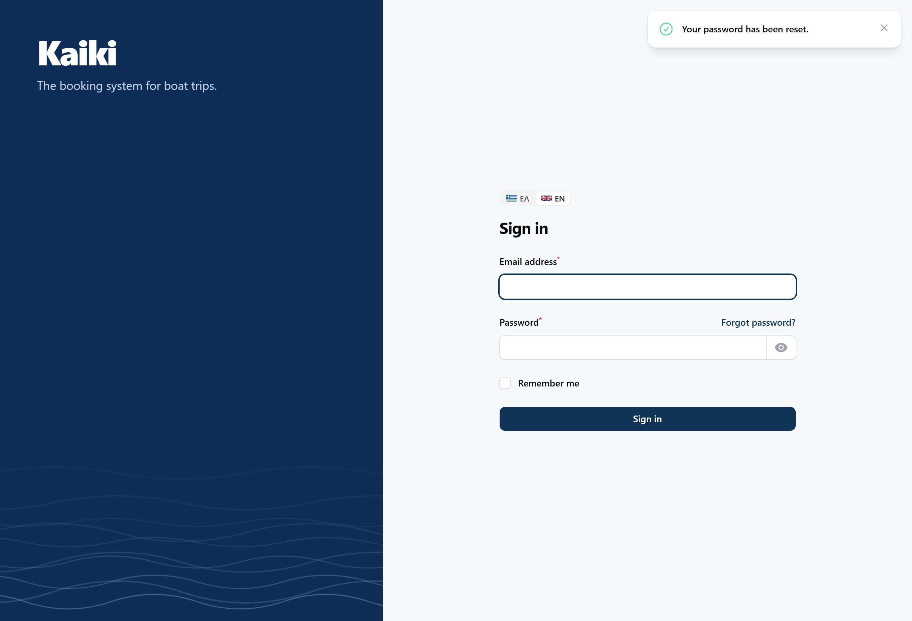
Είναι μιας χρήσης και λήγει. Αν τον ανοίξετε δεύτερη φορά δεν θα δουλέψει, και αυτό είναι σωστό — δεν είναι σφάλμα να αναφέρετε. Ζητήστε καινούργιον με την εντολή του μέρους Γ, ή από το «Ξεχάσατε τον κωδικό σας;» στη σελίδα εισόδου.
Μόλις μπείτε, δεν βλέπετε τον πίνακα: βλέπετε τον οδηγό, σε όλη την οθόνη. Κρατά τον πίνακα κλειστό μέχρι να απαντήσετε — ή να πείτε ότι θα το κάνετε αργότερα.
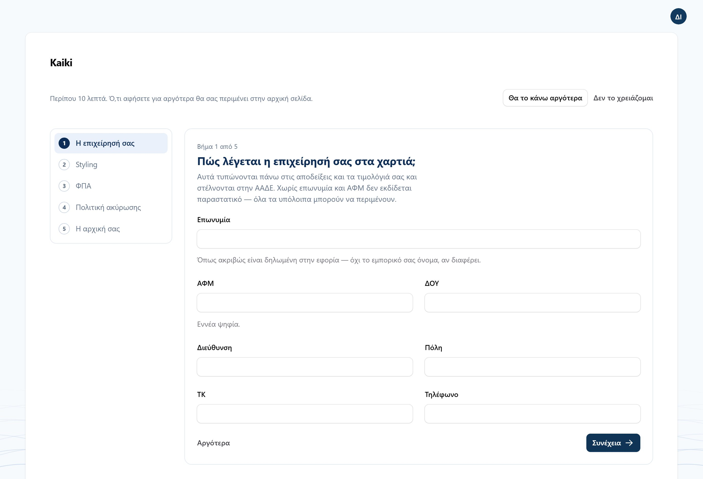
Ο οδηγός ρωτάει πια μόνο για τον λογαριασμό — τέσσερις ερωτήσεις, και μια πέμπτη για όποιον έχει πλήρη ιστοσελίδα. Λιμάνι, σκάφος, περίοδος και εκδρομή δεν είναι πια μέσα στον οδηγό· έχουν δικές τους οθόνες (μέρος Ε).
| Βήμα | Τι ζητάει | Γιατί |
|---|---|---|
| Η επιχείρησή σας | Επωνυμία, ΑΦΜ, ΔΟΥ, διεύθυνση, τηλέφωνο | Τυπώνονται στα παραστατικά |
| Styling | Λογότυπο, λογότυπο για σκούρο φόντο, τρία χρώματα | Μπαίνουν στις σελίδες και στα email. Προαιρετικό |
| ΦΠΑ | Τον συντελεστή που πουλάτε συνήθως | Προσυμπληρώνεται σε κάθε νέα εκδρομή |
| Πολιτική ακύρωσης | Μία από τρεις: Ευέλικτη, Κανονική, Αυστηρή | Χωρίς πολιτική μια εκδρομή δεν δημοσιεύεται |
| Η αρχική σας | Σας στέλνει να φτιάξετε την αρχική σελίδα | Μόνο για «Πλήρη ιστοσελίδα» |
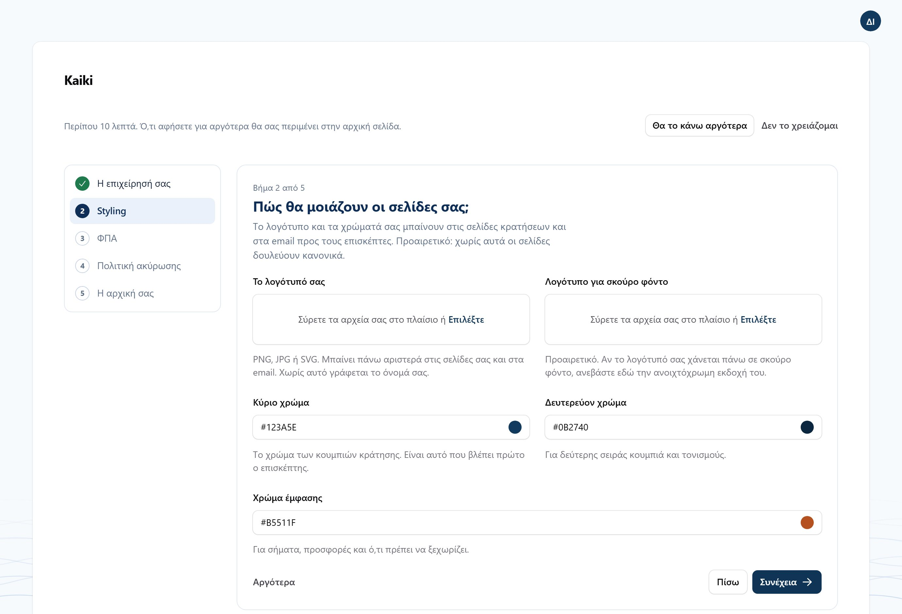
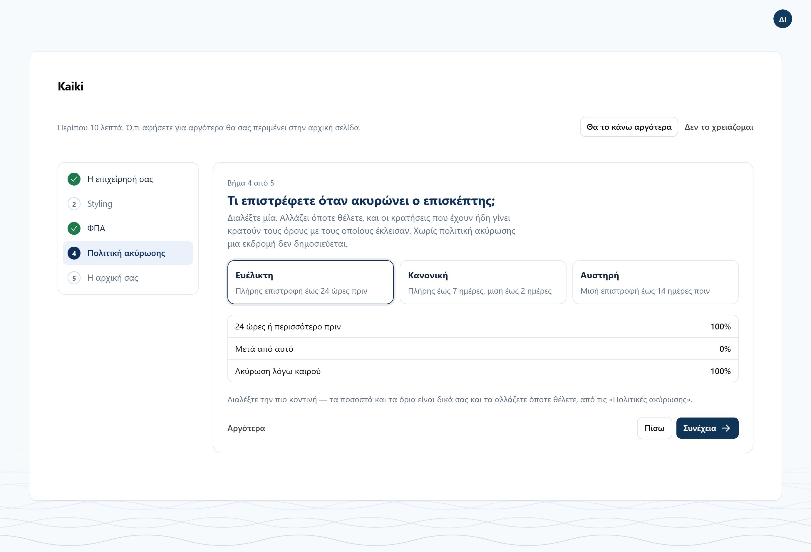
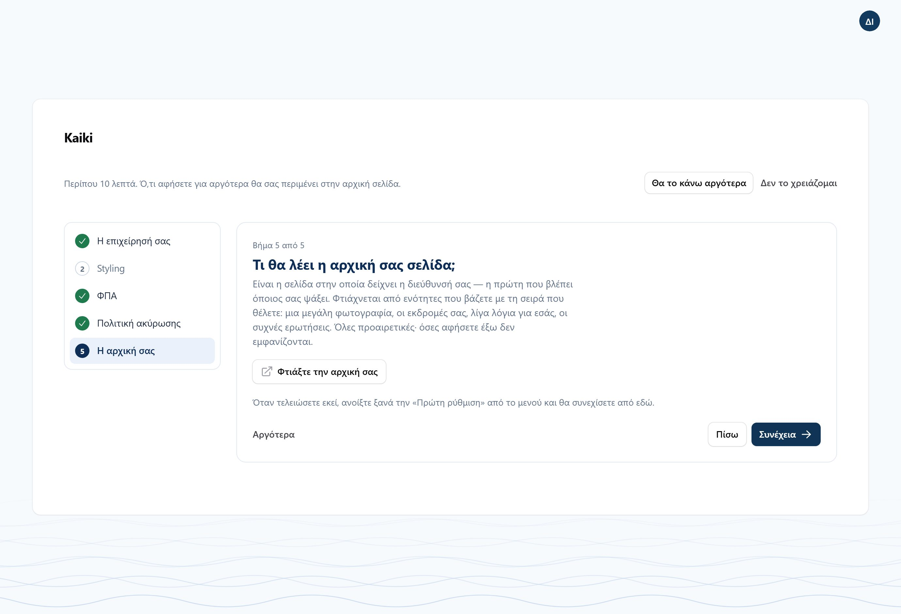
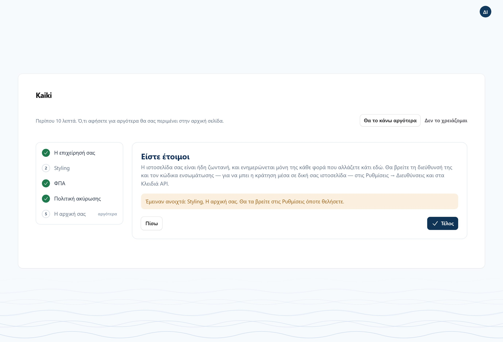
Επωνυμία και ΑΦΜ (εννέα ψηφία — επινοημένα), ΔΟΥ. Συνέχεια.
Αν έχετε ένα λογότυπο PNG, ανεβάστε το· αλλιώς πατήστε Συνέχεια χωρίς αλλαγές.
Διαλέξτε τον μοναδικό δοκιμαστικό συντελεστή. Συνέχεια.
Πατήστε Κανονική — «πλήρης έως 7 ημέρες, μισή έως 2 ημέρες». Θα τη χρειαστείτε στο μέρος Ζ, όταν ακυρώσετε κράτηση.
Πατήστε Αργότερα. Θα τη φτιάξετε όταν υπάρχει εκδρομή να δείξει.
Ο πίνακας ανοίγει.
/app/bookings. Πρέπει να σας γυρίσει στον οδηγό.
/admin υπάρχει «Επαναφορά οδηγού».
/admin αλλάξετε τις σελίδες σε «Μόνο σελίδες κρατήσεων» και
επαναφέρετε τον οδηγό, το βήμα «Η αρχική σας» πρέπει να λείπει, και το κλείσιμο
να μη λέει «η ιστοσελίδα σας».
Το βήμα του ΦΠΑ δεν σας λέει ποιον συντελεστή να διαλέξετε, επίτηδες: είναι απάντηση λογιστή, και ένα λάθος εκεί γίνεται λάθος πάνω σε παραστατικό. Αν δεν ξέρετε, πατήστε «Αργότερα».
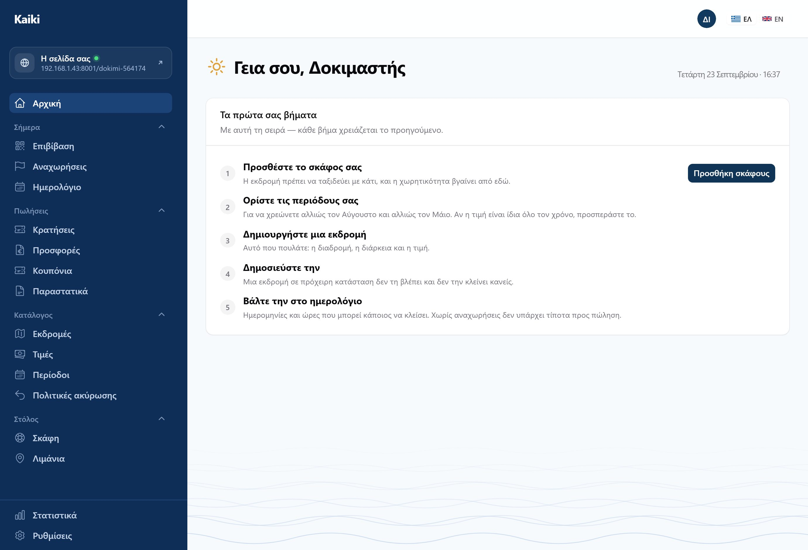
Ό,τι ο οδηγός δεν ρωτάει πια, το δείχνει ο πίνακας. Κάθε φορά που κάνετε ένα βήμα στο μέρος Ε, γυρίστε στην Αρχική: το βήμα πρέπει να έχει τσεκαριστεί και το κουμπί να έχει πάει στο επόμενο. Οι «Περίοδοι» είναι προαιρετικές — αν δεν τις χρειάζεστε, προσπερνιούνται.
Η σειρά έχει σημασία και δεν είναι αυθαίρετη: ένα σκάφος θέλει λιμάνι, μια εκδρομή θέλει σκάφος, μια τιμή για το καλοκαίρι θέλει περίοδο.
Στο μενού, Στόλος → Λιμάνια, και Προσθήκη.
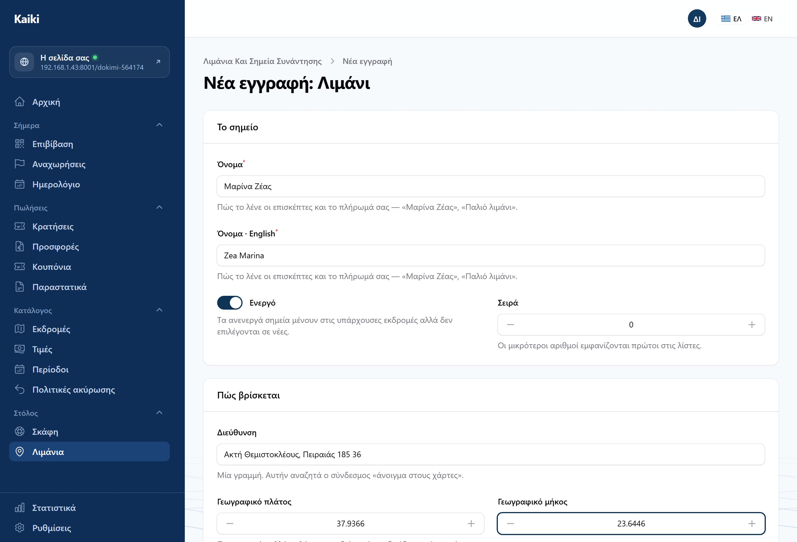
Βάλτε όνομα και διεύθυνση. Αν συμπληρώσετε συντεταγμένες, η σελίδα της κράτησης δείχνει χάρτη· χωρίς αυτές δείχνει μόνο σύνδεσμο, που είναι καλύτερο από σπασμένο κουτί στο σημείο που λέει στον πελάτη πού να πάει. Δοκιμάστε και τα κουμπιά − και + δίπλα στους αριθμούς: υπάρχουν πια σε κάθε αριθμητικό πεδίο του πίνακα, και στο κινητό.
Στόλος → Σκάφη → Προσθήκη.

Δύο πεδία κάνουν περισσότερα απ' όσα φαίνονται. Οι μέγιστοι επιβάτες είναι νόμιμο όριο και καμία κράτηση δεν το ξεπερνά, ούτε χειροκίνητη. Ο χρόνος προετοιμασίας είναι τα λεπτά που χρειάζεστε ανάμεσα σε δύο εκδρομές του ίδιου σκάφους — και το Kaiki δεν θα πουλήσει ποτέ δύο που πέφτουν μέσα σε αυτό το διάστημα.
Βάλτε 10 επιβάτες, κάντε αργότερα κράτηση για 8, και μετά προσπαθήστε να το κατεβάσετε σε 5. Πρέπει να αρνηθεί και να σας πει ποιες κρατήσεις το εμποδίζουν.
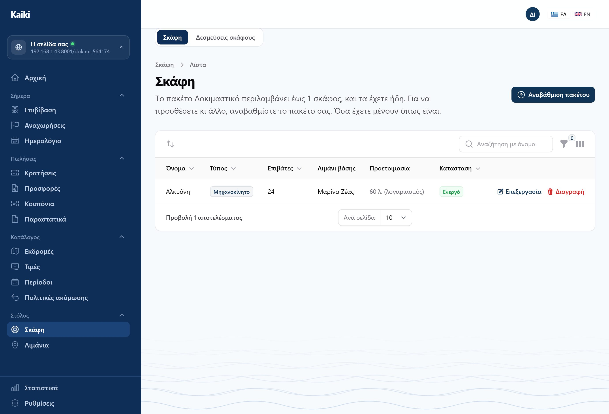
Μόλις φτιάξετε το πρώτο σκάφος, η λίστα πρέπει να λέει ότι το πακέτο
Δοκιμαστικό περιλαμβάνει έως 1 σκάφος, και το κουμπί να έχει γίνει
Αναβάθμιση πακέτου. Ανοίξτε κατευθείαν
/app/vessels/create και προσπαθήστε να φτιάξετε δεύτερο: πρέπει να
αρνηθεί με μήνυμα που εξηγεί το πακέτο, και να μη δημιουργηθεί τίποτα.
Μετά, στο /admin, καρτέλα Συνδρομή, βάλτε τον διοργανωτή σε
Στόλος (με αιτιολογία): το κουμπί ξαναγίνεται «Προσθήκη» και
φτιάχνετε δεύτερο. Στο «Η ιστοσελίδα σας» και στα «Webhooks» πρέπει να λέει
«Διαθέσιμο στο πακέτο Pro». Αφήστε τον σε Στόλο για τα υπόλοιπα.
Με δύο σκάφη, πατήστε το εικονίδιο με τα δύο βελάκια πάνω αριστερά στη λίστα και σύρετε το ένα πάνω από το άλλο. Το ίδιο υπάρχει στις Εκδρομές: εκεί η σειρά είναι αυτή που βλέπει ο επισκέπτης στον κατάλογο.
Κατάλογος → Περίοδοι. Έχουν πια δικό τους στοιχείο στο μενού — δεν κρύβονται μέσα στις Τιμές.
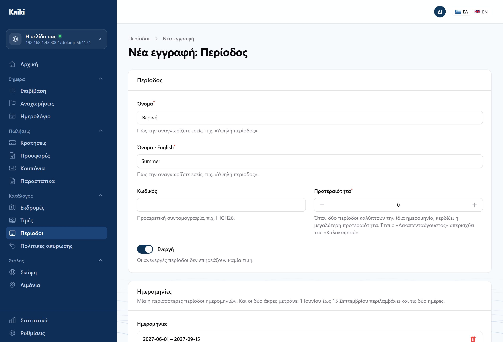
Φτιάξτε μία: «Θερινή», από 1 Ιουνίου έως 15 Σεπτεμβρίου. Αν η τιμή σας είναι ίδια όλο τον χρόνο, δεν χρειάζεστε περίοδο: κάθε εκδρομή έχει ήδη τιμή «Όλο τον χρόνο».
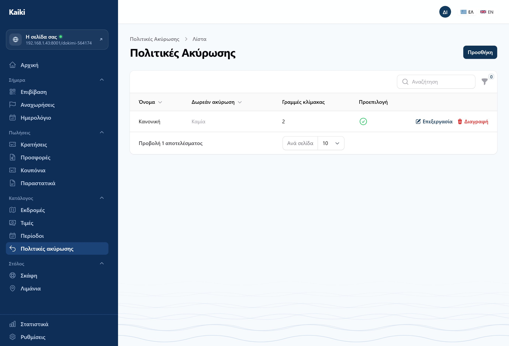
Ανοίξτε την: είναι αντίγραφο του προτύπου της πλατφόρμας, με δύο γραμμές κλίμακας. Αλλάζει ελεύθερα — είναι δική σας.
Κατάλογος → Εκδρομές → Προσθήκη. Μια καινούργια εκδρομή φτιάχνεται με οδηγό πέντε βημάτων, και βγαίνει έτοιμη να πουλήσει — με δρομολόγιο, τιμές και φωτογραφίες.
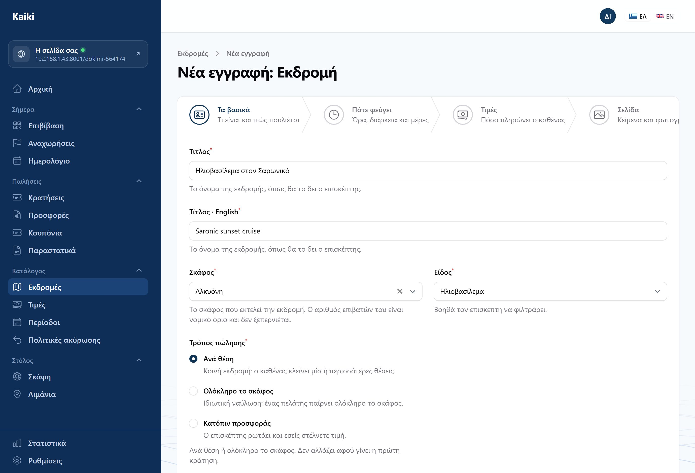
Η σημαντική απόφαση είναι ο τρόπος πώλησης, γιατί αλλάζει όλα τα υπόλοιπα βήματα:
| Τρόπος | Τι σημαίνει |
|---|---|
| Ανά θέση | Κοινή εκδρομή. Τιμή ανά ηλικία, και οι θέσεις μετρούν |
| Ολόκληρο το σκάφος | Ιδιωτική ναύλωση. Μία τιμή για το σκάφος |
| Κατόπιν προσφοράς | Δεν δείχνει τιμή. Ο επισκέπτης ρωτάει, εσείς στέλνετε προσφορά |
Για την πρώτη σας εκδρομή διαλέξτε Ανά θέση — είναι η διαδρομή που δοκιμάζει τα περισσότερα.
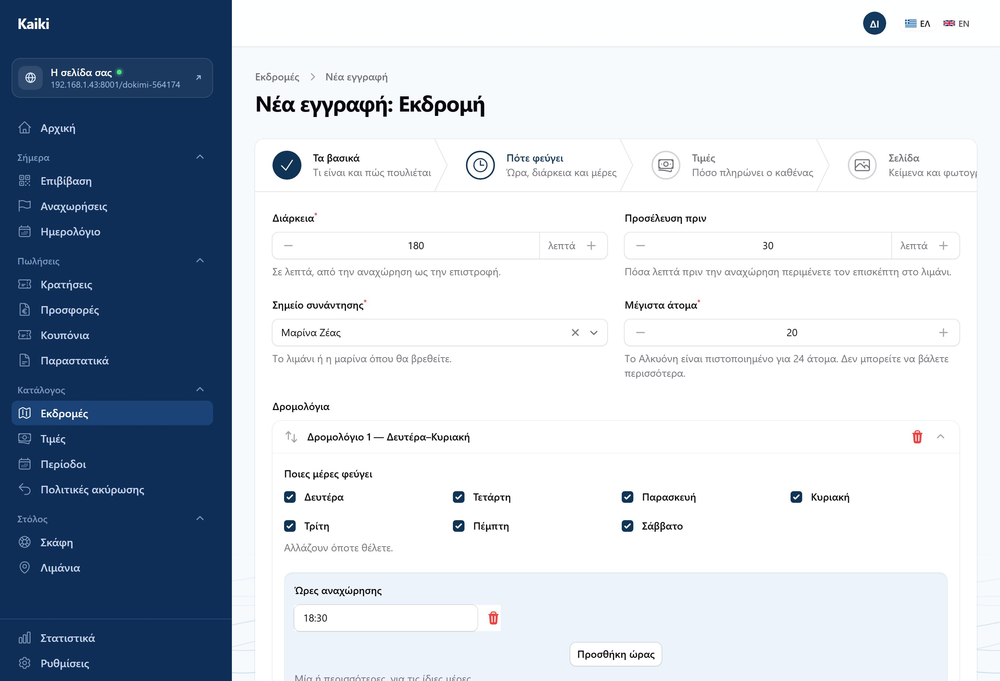
Διάρκεια 180 λεπτά, προσέλευση 30, το λιμάνι σας, 20 άτομα. Στο δρομολόγιο τσεκάρετε όλες τις μέρες και βάλτε ώρα 18:30. Με Κι άλλο δρομολόγιο μπορείτε να προσθέσετε π.χ. «Σαββατοκύριακα 12:00». Αν βάλετε περισσότερα άτομα από όσα παίρνει το σκάφος, πρέπει να αρνηθεί.
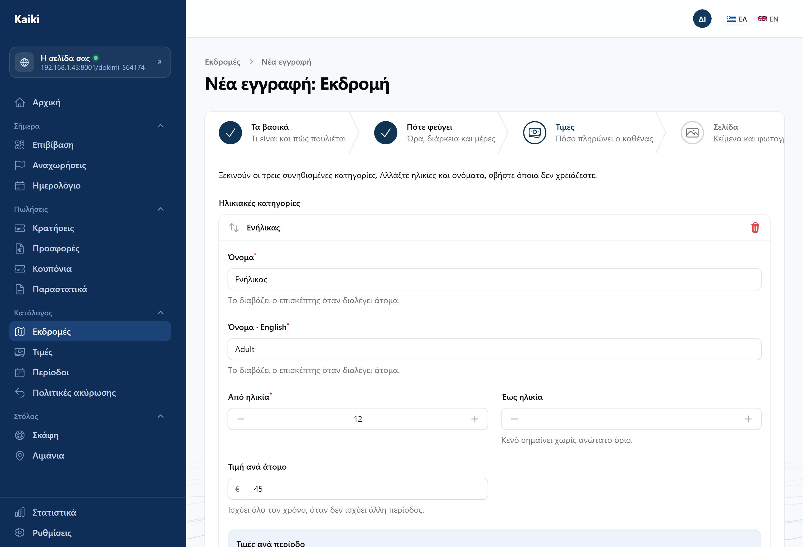
Ενήλικας 45, Παιδί 25, Βρέφος 0. Στον ενήλικα πατήστε Τιμή για περίοδο, διαλέξτε «Θερινή» και γράψτε 55. Δεν υπάρχει πια ξεχωριστή οθόνη «Προσθήκη τιμοκαταλόγου»: οι τιμοκατάλογοι φτιάχνονται μόνοι τους από εδώ.
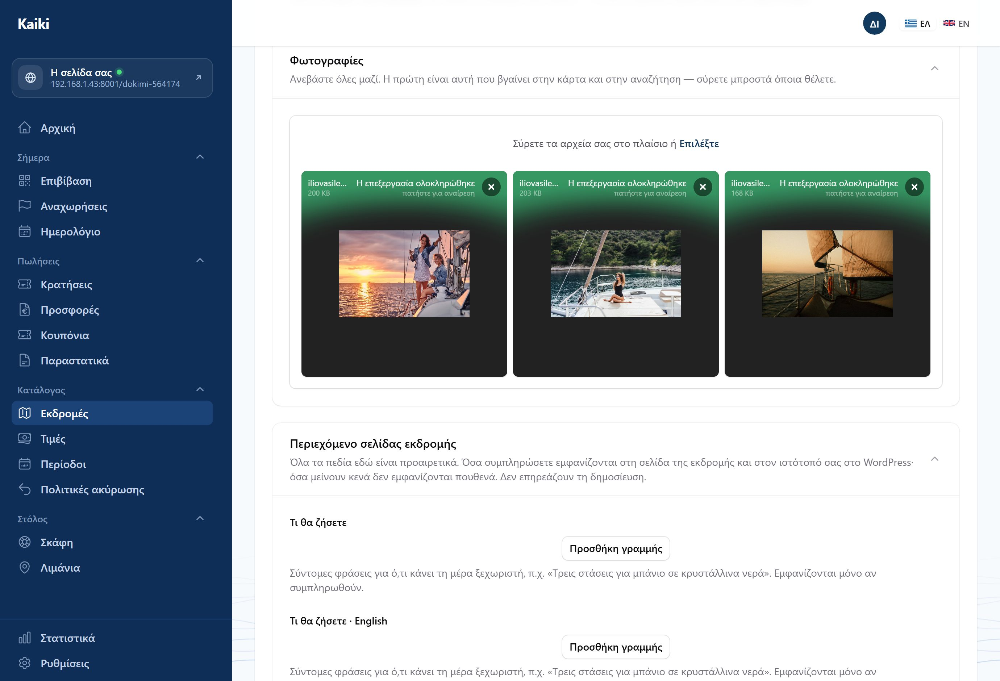
Όλα προαιρετικά. Ανεβάστε δύο-τρεις φωτογραφίες με μία επιλογή (ή σύροντάς τες στο πλαίσιο) και σύρετε μπροστά αυτή που θέλετε κύρια.
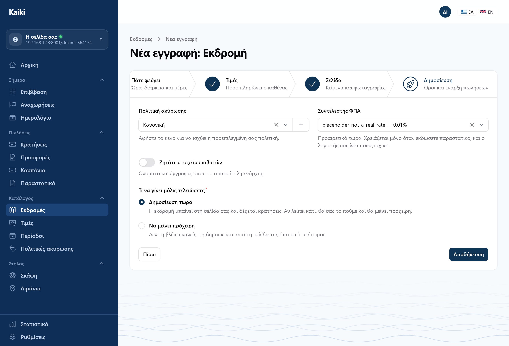
Αφήστε την πολιτική κενή (ισχύει η προεπιλεγμένη σας) ή διαλέξτε την «Κανονική». Αφήστε Δημοσίευση τώρα και πατήστε Αποθήκευση. Αν λείπει κάτι, πρέπει να σας το πει και να κρατήσει την εκδρομή πρόχειρη — όχι να χαθούν τα βήματα.
Μόλις αποθηκευτεί, η ίδια εκδρομή ανοίγει σε καρτέλες: Βασικά, Πότε φεύγει, Τιμές, Όροι, Σελίδα.
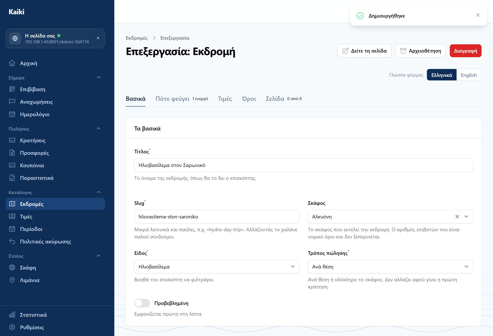
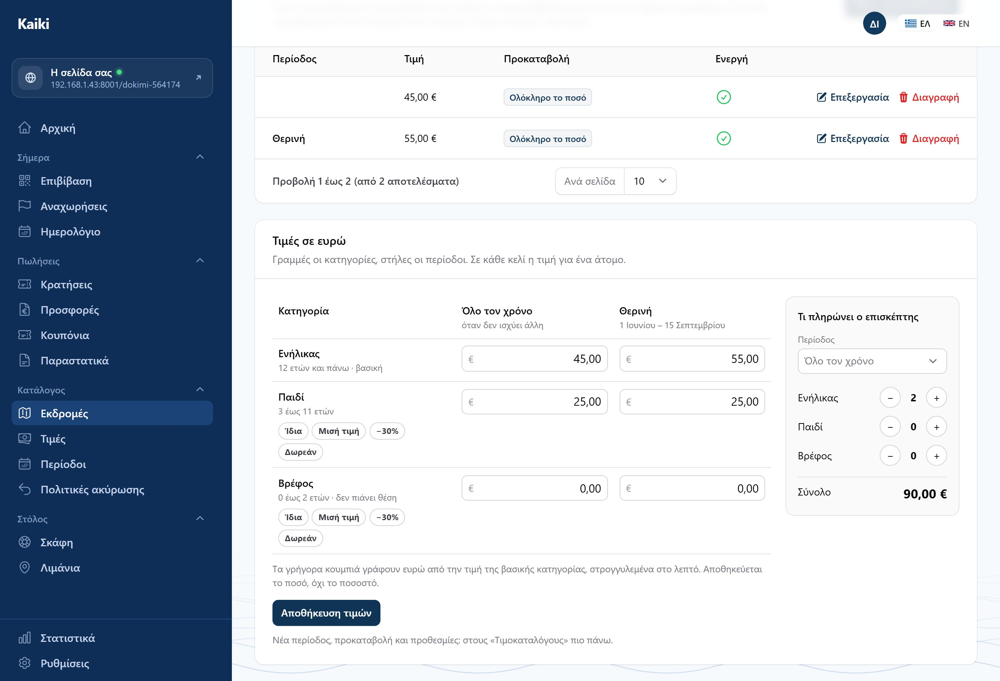
Στον πίνακα «Τιμές σε ευρώ», αλλάξτε το Παιδί σε «Μισή τιμή» και πατήστε Αποθήκευση τιμών. Στο κουτάκι δεξιά, διαλέξτε «Θερινή» και βάλτε 2 ενήλικες και 1 παιδί: το σύνολο πρέπει να βγαίνει με τις τιμές της περιόδου.
Στις Τιμές, στην κατηγορία «Παιδί», ανοίξτε το Χρειάζεται συνοδό ενήλικα και πατήστε Αποθήκευση κάτω. Θα το δοκιμάσετε σαν επισκέπτης στο μέρος ΣΤ. (Το «Βρέφος» το έχει ήδη ανοιχτό.)
Στην καρτέλα Σελίδα, κάτω κάτω, «Συχνές ερωτήσεις» → Νέα ερώτηση. Αυτές φαίνονται μόνο σε αυτή την εκδρομή· όσες αφορούν όλη την επιχείρηση γράφονται στις Ρυθμίσεις → Συχνές ερωτήσεις.
Στην ίδια καρτέλα, σύρετε μια άλλη φωτογραφία πρώτη και αποθηκεύστε. Στη σελίδα της εκδρομής, η πρώτη πρέπει να είναι η μεγάλη.
Μετά την πρώτη κράτηση (μέρος ΣΤ), γυρίστε στα Βασικά: ο «Τρόπος πώλησης» δεν πρέπει να αλλάζει πια.
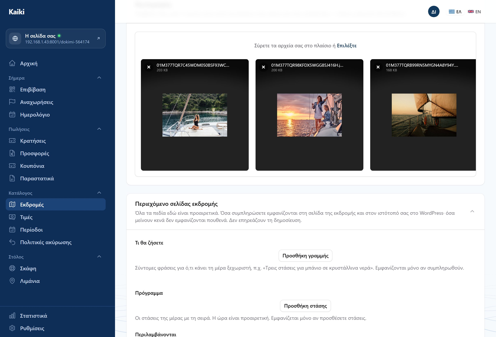
Στη δική μας δοκιμή ανεβάσαμε τρεις φωτογραφίες με τη σειρά 1-2-3 και μετά την αποθήκευση η εκδρομή τις έδειξε 2-1-3. Ελέγξτε ποια βγήκε πρώτη στη δική σας, και αν δεν είναι αυτή που διαλέξατε, αναφέρετέ το.
Αν μια μέρα δεν πέφτει σε καμία περίοδο και δεν υπάρχει τιμή «Όλο τον χρόνο», η εκδρομή δεν πουλάει εκείνη τη μέρα — δεν βγάζει 0 €. Αν δείτε μηδενική τιμή κάπου χωρίς να την έχετε βάλει, αναφέρετέ το.
Τα δρομολόγια που βάλατε στο βήμα 2 παράγουν αναχωρήσεις μόνα τους. Τις βλέπετε στο Σήμερα → Αναχωρήσεις και στο Ημερολόγιο.
Παράγονται από εργασία στην ουρά. Αν το παράθυρο του εργάτη ουράς δεν τρέχει, δεν θα εμφανιστεί καμία — και δεν θα υπάρξει μήνυμα σφάλματος πουθενά. Δώστε λίγα δευτερόλεπτα και ανανεώστε την οθόνη «Αναχωρήσεις».
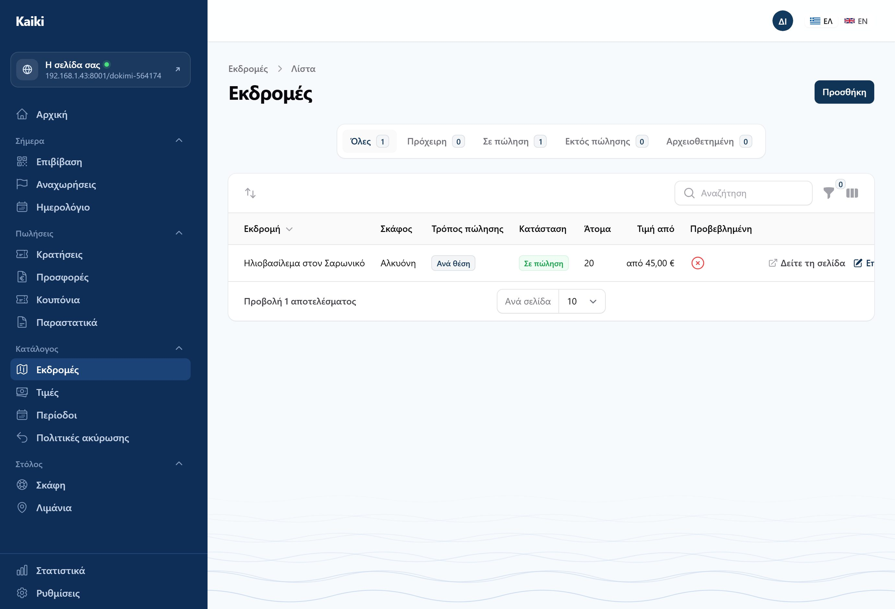
Όσο μια εκδρομή είναι πρόχειρη, στην οθόνη της υπάρχει στήλη «Πριν τη δημοσίευση» με ό,τι λείπει. Μόλις δημοσιευτεί και δεν λείπει τίποτα, η στήλη φεύγει· αν αργότερα σβήσετε το τελευταίο δρομολόγιο, πρέπει να ξαναφανεί. Αν κάτι από αυτά δεν βγάζει νόημα, είναι χρήσιμο εύρημα.
Ανοίξτε τη σελίδα σε άλλο παράθυρο — ιδιωτική περιήγηση, ή άλλο μηχάνημα. Ο επισκέπτης δεν είναι συνδεδεμένος, και το θέμα είναι να το δείτε όπως το βλέπει. Κάντε τα βήματα και από κινητό: εκεί ανοίγει η σελίδα τις περισσότερες φορές.
http://192.168.1.43:8001/to-slug-sas
Το slug είναι αυτό που δώσατε στο μέρος Γ. Υπάρχει και η κάρτα «Η σελίδα σας» πάνω αριστερά στον πίνακα, που πάει στο ίδιο μέρος, και το «Δείτε τη σελίδα» σε κάθε εκδρομή.
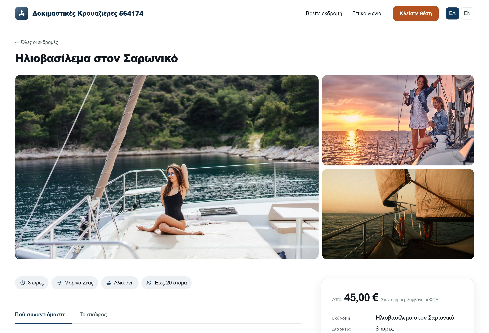
Τα χρώματα και το λογότυπο του Styling πρέπει να είναι εδώ. Η μπάρα αναζήτησης λειτουργεί από την πρώτη μέρα.
Ημερομηνία και άτομα. Δείχνει μόνο ό,τι όντως μπορεί να κλειστεί, και με την τιμή της συγκεκριμένης παρέας — όχι «από …».
Φωτογραφίες, τι περιλαμβάνει, πού συναντιόμαστε, το σκάφος, οι συχνές ερωτήσεις. Το κουτί κράτησης δίπλα στον τίτλο λέει τρία πράγματα και έχει ένα κουμπί.
Στο κουτί κράτησης. Πράσινο όπου υπάρχουν θέσεις, κόκκινο όπου εξαντλήθηκαν, γκρι όπου δεν υπάρχει αναχώρηση. Δοκιμάστε να διαλέξετε κόκκινη μέρα.
Το κουτί ρωτάει δύο πράγματα: πότε, και πόσοι. Μετά σας πάει σε κανονική σελίδα ολοκλήρωσης.
Στο κινητό το κουτί κράτησης είναι μια μπάρα στο κάτω μέρος. Πατώντας την, ανοίγει ένα φύλλο στη μισή οθόνη, με τη σελίδα να φαίνεται από πάνω.
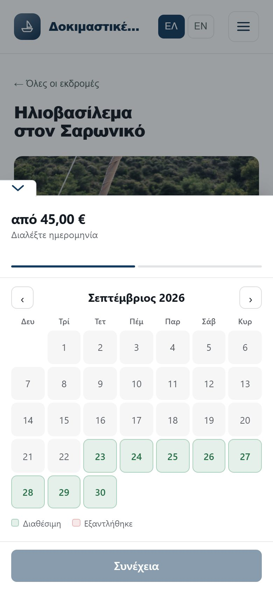
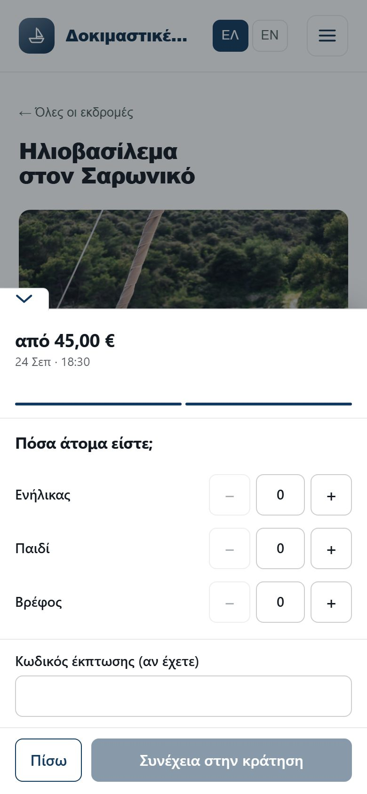
Ελέγξτε ότι το φύλλο δεν επαναλαμβάνει όσα γράφει ήδη η σελίδα από πάνω, ότι το πεδίο της έκπτωσης δεν ακουμπά τις άκρες της οθόνης, και ότι το «Πίσω» σας γυρίζει στο ημερολόγιο χωρίς να χάσετε την ημερομηνία.
Στο μέρος Ε ανοίξατε το «Χρειάζεται συνοδό ενήλικα» στην κατηγορία «Παιδί». Τώρα δοκιμάστε, σαν επισκέπτης, να κλείσετε ένα παιδί μόνο του.
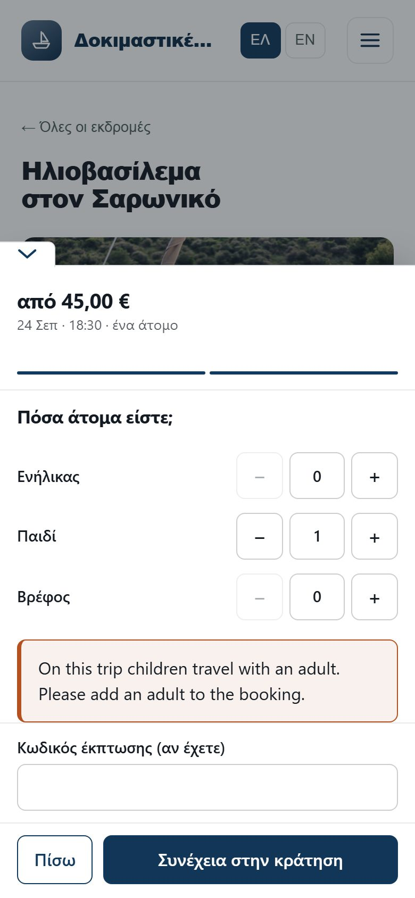
Στις 23 Σεπτεμβρίου και τα δύο μηνύματα εμφανίζονταν στα αγγλικά μέσα σε ελληνική σελίδα, όπως στην εικόνα. Αν τα δείτε ακόμη έτσι, αναφέρετέ το.
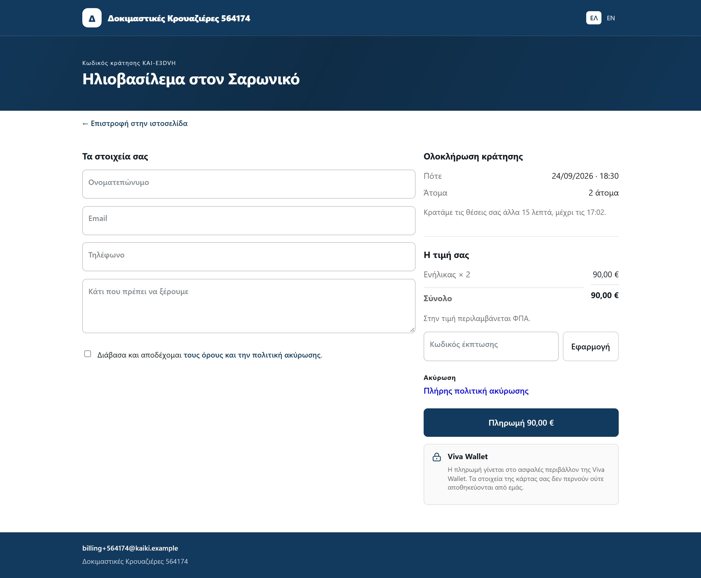
Κάθε πεδίο γράφει μέσα του τι ζητάει. Μόλις γράψετε, η λέξη ανεβαίνει στο πάνω μέρος του πεδίου και μένει ορατή. Δοκιμάστε να σβήσετε ό,τι γράψατε: η λέξη πρέπει να ξαναπέσει μέσα.
Η σελίδα λέει μέχρι πότε. Ανοίξτε την ίδια αναχώρηση σε δεύτερο παράθυρο: οι διαθέσιμες θέσεις πρέπει να έχουν μειωθεί. Αν εγκαταλείψετε, ελευθερώνονται μόνες τους.
Το «Πλήρης πολιτική ακύρωσης» πρέπει να δείχνει την «Κανονική» που διαλέξατε.
Δεν δοκιμάζουμε πληρωμές. Χωρίς τσεκαρισμένο το «Διάβασα και αποδέχομαι», το κουμπί δεν πρέπει να προχωρά.
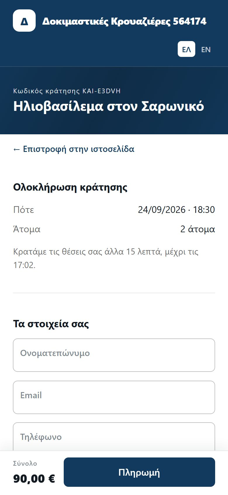
Στο κινητό, κυλήστε ως κάτω: η μπάρα με το σύνολο πρέπει να μένει πάντα ορατή και να μην κρύβει το τελευταίο πεδίο ή το «Διάβασα και αποδέχομαι».
Για να δείτε τι γίνεται μετά — επιβεβαίωση, εισιτήριο, επιβίβαση — δεν χρειάζεται κάρτα. Καταχωρήστε την κράτηση από τον πίνακα.
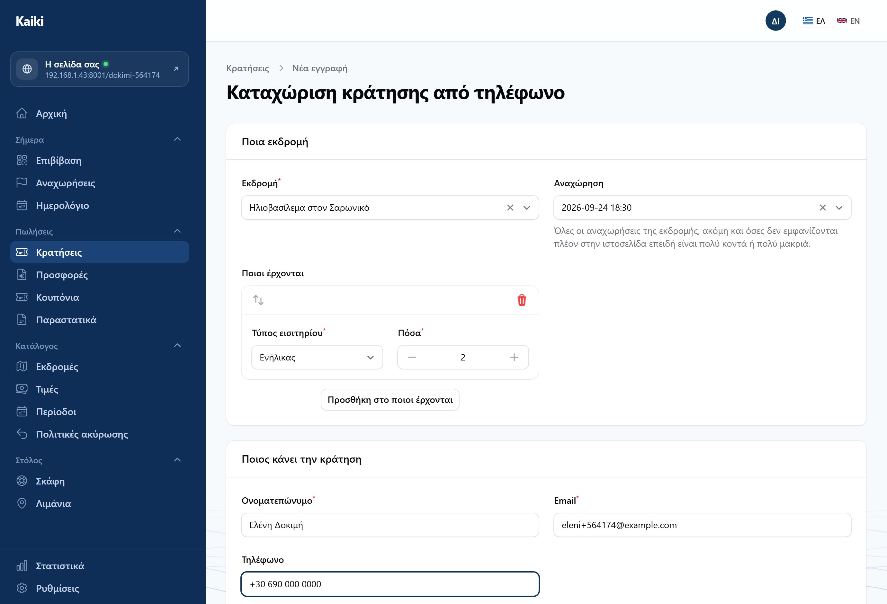
Διαλέξτε την εκδρομή, μια αναχώρηση από αύριο και μετά, 2 ενήλικες, ένα όνομα και ένα επινοημένο email.
Έτσι η κράτηση βγαίνει κατευθείαν επιβεβαιωμένη. Πατήστε Αποθήκευση.
Πηγαίνετε στο Mailpit, http://192.168.1.43:8025. Εκεί είναι η
«Η κράτησή σας επιβεβαιώθηκε», με το εισιτήριο συνημμένο.
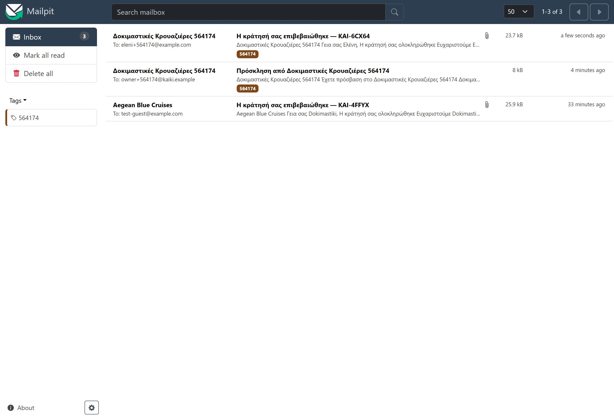
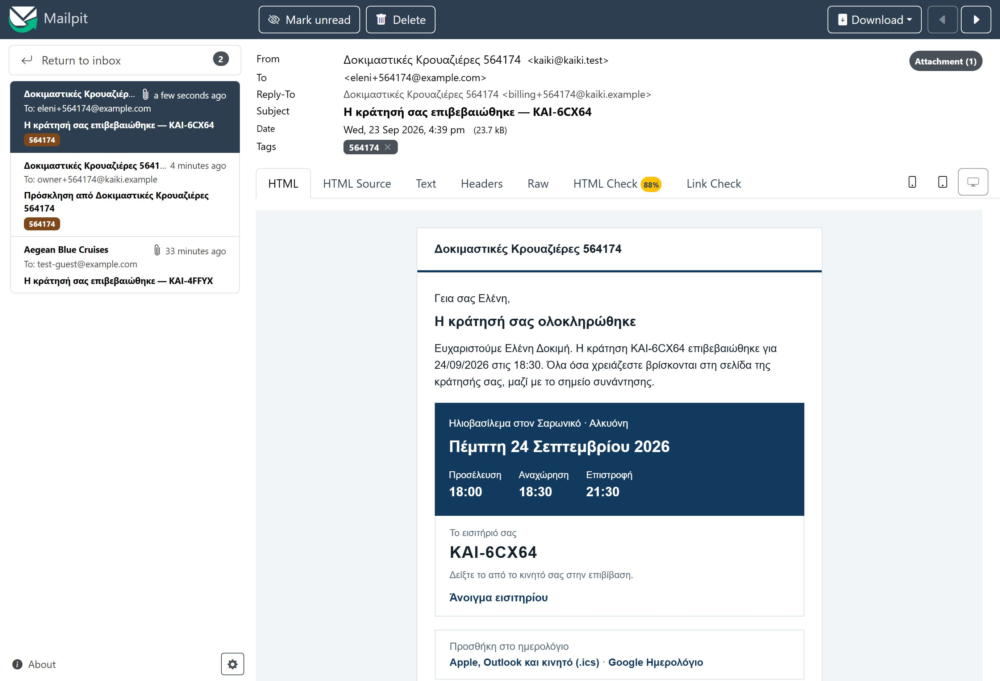
Ανοίξτε το email και ελέγξτε τα «From» και «Reply-To» επάνω. Αν ο αποστολέας είναι σκέτο «Kaiki», ή αν το Reply-To λείπει ενώ η επιχείρηση έχει email, αναφέρετέ το.
Από το email, πατήστε Άνοιγμα εισιτηρίου. Ανοίγει η σελίδα που κρατά ο επισκέπτης για όλα όσα αφορούν την κράτησή του.
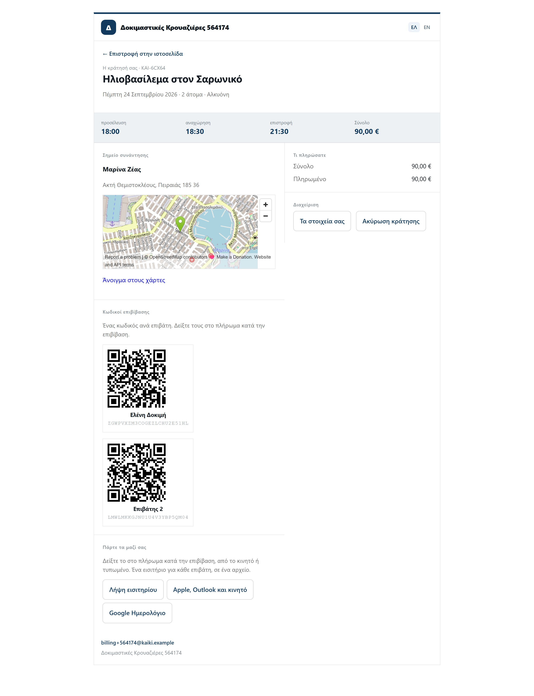
Στο μενού της σελίδας σας υπάρχει «Επικοινωνία». Στείλτε μήνυμα σαν πελάτης. Δεν γίνεται email: καταχωρείται στον πίνακα, στο Πωλήσεις → Προσφορές, καρτέλα Ερωτήματα, όπου έχει κατάσταση και κάποιον που το κλείνει. Αν το στείλετε από σελίδα εκδρομής, πρέπει να φτάνει με την εκδρομή δίπλα του.
Η κράτηση έγινε. Τώρα δουλεύουμε σαν διοργανωτής που έχει πελάτες — που είναι όπου περνάει ο περισσότερος χρόνος στην πραγματικότητα.
Με μία κράτηση μέσα, η «Αρχική» αρχίζει να λέει κάτι. Είναι επίτηδες ήσυχη: λίγοι αριθμοί, κανένα γράφημα. Αν κάτι δεν συμφωνεί με ό,τι βλέπετε αλλού, είναι εύρημα.
Μπείτε με έναν λογαριασμό πληρώματος (δικός σας από τη «Ρυθμίσεις → Ομάδα», ή ο
έτοιμος nikos@aegean-blue.example). Στο Ημερολόγιο,
πατήστε μια αναχώρηση.
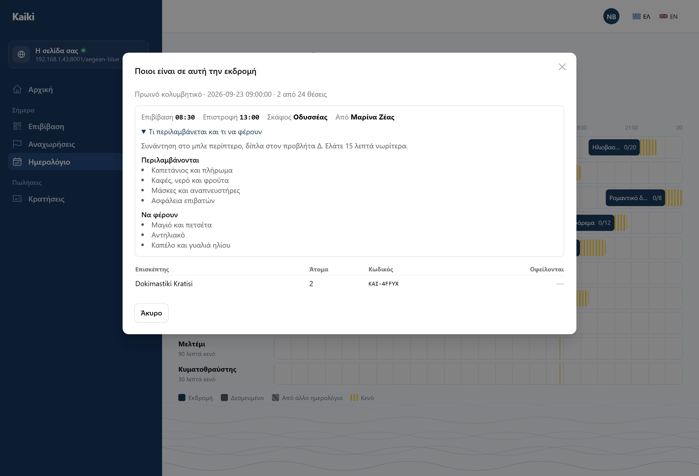
Ελέγξτε ότι το πλήρωμα βλέπει ό,τι χρειάζεται στην προβλήτα και καμία τιμή: ούτε «από … €», ούτε σύνολα κρατήσεων. Το μενού του πληρώματος έχει μόνο Αρχική, Επιβίβαση, Αναχωρήσεις, Ημερολόγιο και Κρατήσεις.
Η κράτησή σας πρέπει να φαίνεται πάνω στο σκάφος, με ορατό το κενό προετοιμασίας γύρω της.
Από την αναχώρηση. Είναι το έγγραφο που διαβάζει το λιμεναρχείο. Αν βάλατε βρέφος, πρέπει να είναι μέσα παρότι δεν πιάνει θέση.
Ανοίξτε http://192.168.1.43:8000/app/check-in από τηλέφωνο στο
ίδιο δίκτυο. Σαρώστε ένα QR από τη σελίδα της κράτησης (ή από το PDF του
εισιτηρίου στο Mailpit) ή πληκτρολογήστε τον κωδικό κάτω από αυτό. Δοκιμάστε
το ίδιο εισιτήριο δύο φορές — πρέπει να το πει καθαρά, όχι να
βγάλει σφάλμα. Και έναν επιβάτη χωρίς εισιτήριο: βρείτε το
όνομα στη λίστα και πατήστε «Επιβίβαση».
Αν η αναχώρηση απέχει πάνω από μισή ώρα, η γραμμή δείχνει «Πρόωρη επιβίβαση» αντί για «Επιβίβαση». Πρέπει να ζητήσει λόγο — και ο λόγος να φαίνεται μετά στις Ρυθμίσεις → Ιστορικό ενεργειών.
Στην «Επιβίβαση» πατήστε «Χωρίς σήμα στην προβλήτα;». Με τη σελίδα ανοιχτή, κλείστε το Wi-Fi και τα δεδομένα του κινητού και πατήστε «Επιβίβαση» δίπλα σε ένα όνομα: πρέπει να πει «Καταγράφηκε — θα σταλεί μόλις βρεθεί σήμα», και πάνω δεξιά «Χωρίς σήμα». Ανοίξτε ξανά το δίκτυο: πρέπει να σταλεί μόνο του και να φανεί και στην οθόνη του γραφείου.
Στο /admin, στον διοργανωτή σας, καρτέλα «Λειτουργίες», κλείστε
το «Επιβίβαση με QR» (μέρος Γ). Κάντε μία ακόμη κράτηση: το εισιτήριο και η
σελίδα της κράτησης πρέπει να βγουν χωρίς QR. Στην
«Επιβίβαση» και στη σελίδα χωρίς σήμα δεν πρέπει να υπάρχει πεδίο σάρωσης —
μόνο η λίστα με το κουμπί. Ένα παλιό QR πρέπει να ανοίγει τη λίστα χωρίς να
επιβιβάσει κανέναν. Στο τέλος ξανανοίξτε τον διακόπτη.
Από την κράτηση στον πίνακα, «Ακύρωση κράτησης» — ή σαν επισκέπτης, από το «Ακύρωση κράτησης» στη σελίδα της κράτησης. Δείτε τι υπολογίζει η «Κανονική». Η επιστροφή βγαίνει από την πολιτική που ίσχυε όταν έγινε η κράτηση, όχι από τη σημερινή — αλλάξτε την πολιτική μετά την κράτηση και δείτε ότι δεν αλλάζει το ποσό.
Ξεχωριστή διαδρομή. Πρέπει πρώτα να σας δείξει ποιος παίρνει τι πίσω, και μόνο μετά να στείλει. Τίποτα δεν ακυρώνεται μόνο του.
Φτιάξτε εκδρομή «κατόπιν προσφοράς», ζητήστε τιμή ως επισκέπτης, και στην κράτηση που θα εμφανιστεί στις Κρατήσεις πατήστε Δημιουργία προσφοράς. Συμπληρώστε γραμμές, στείλτε, και ανοίξτε τον σύνδεσμο από το Mailpit σαν επισκέπτης. Η προσφορά μένει μετά στο Πωλήσεις → Προσφορές.
Στο /admin → Ανακοινώσεις → νέα: γράψτε ένα σύντομο
μήνυμα στα ελληνικά και στα αγγλικά. Στο /app του διοργανωτή σας
πρέπει να εμφανιστεί πάνω από κάθε σελίδα. Πατήστε «Κλείσιμο»: να μην
ξαναφανεί σε καμία σελίδα, ούτε μετά από ανανέωση. Φτιάξτε δεύτερη: να
εμφανιστεί η καινούργια. Δοκιμάστε και ένα μήνυμα με <b>
μέσα — πρέπει να φανεί σκέτο κείμενο. Στο τέλος απενεργοποιήστε τις.
Κλείστε το παράθυρο «Kaiki queue worker» και κάντε μια κράτηση ή στείλτε μια
πρόσκληση. Στο /admin → Υγεία πλατφόρμας το «Σε
αναμονή» πρέπει να ανεβαίνει και η «Η παλαιότερη περιμένει» να μεγαλώνει —
και το email να μην έχει φτάσει στο Mailpit. Ξεκινήστε τον εργάτη ξανά: η
ουρά πρέπει να αδειάσει και το email να φτάσει.
Ρυθμίσεις → Εισαγωγή από WooCommerce → Νέα εισαγωγή. Ανεβάστε
τα δύο αρχεία-δείγματα από τον φάκελο kaiki,
tests\Fixtures\import\yith-products.xml και
yith-bookings.csv. Στον Έλεγχο εισαγωγής: οι τρεις
εκδρομές προτείνονται για δημιουργία, το «Καπέλο» παραλείπεται ως απλό
προϊόν, και κάθε κράτηση που παραλείπεται γράφει γιατί (περασμένη,
ακυρωμένη, άγνωστη εκδρομή). Πατήστε «Εισαγωγή» και ελέγξτε: οι εκδρομές
είναι πρόχειρες, οι κρατήσεις υπάρχουν, και στο Mailpit
δεν έφτασε κανένα email σε επιβάτη.
Μετά κάντε ξανά την ίδια εισαγωγή με τα ίδια αρχεία: τίποτα δεν πρέπει να δημιουργηθεί δεύτερη φορά — οι εγγραφές γράφουν «Είχε ήδη εισαχθεί». Δύο ίδιες εκδρομές ή δύο ίδιες κρατήσεις είναι το χειρότερο εύρημα αυτού του βήματος.
Ρυθμίσεις → Ομάδα. Προσκαλέστε συνάδελφο ως διαχειριστή και άλλον ως πλήρωμα. Η πρόσκληση φτάνει στο Mailpit, με αποστολέα το όνομα της επιχείρησης· ο καθένας ορίζει δικό του κωδικό και μπαίνει. Μετά συγκρίνετε τι βλέπει: ο διαχειριστής δεν πρέπει να έχει τις κάρτες «Συνδέσεις» και «Πληρωμές» στις Ρυθμίσεις, και το πλήρωμα δεν πρέπει να έχει καθόλου «Ρυθμίσεις» στο μενού.
Ο μηχανισμός τιμολόγησης είναι χτισμένος, αλλά η αποστολή στην ΑΑΔΕ χρειάζεται διαπιστευτήρια που δεν υπάρχουν ακόμη. Η οθόνη θα λέει «Κανένα παραστατικό». Δεν είναι σφάλμα — είναι η τίμια συμπεριφορά· τίποτα δεν πρέπει να μοιάζει καταχωρημένο στην εφορία ενώ δεν είναι.
Ρυθμίσεις → Μηνύματα. Κάθε email και SMS που έστειλε το Kaiki για λογαριασμό σας, σε τέσσερις στήλες.
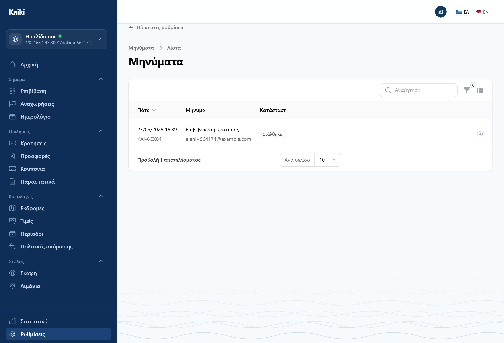
Στατιστικά, κάτω αριστερά στο μενού. Εδώ, αντίθετα με την Αρχική, υπάρχουν γραφήματα.
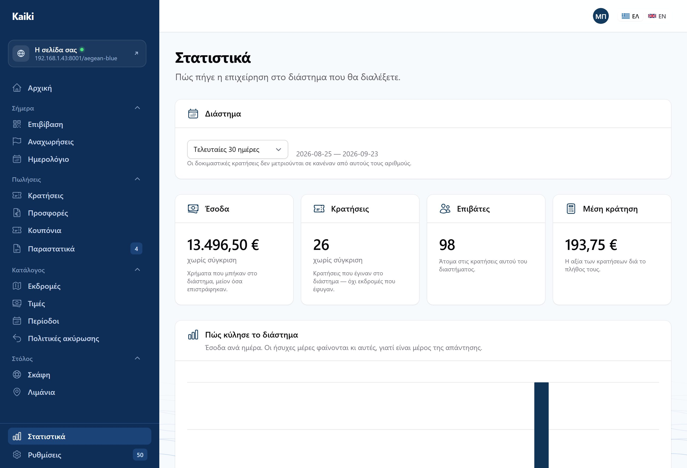
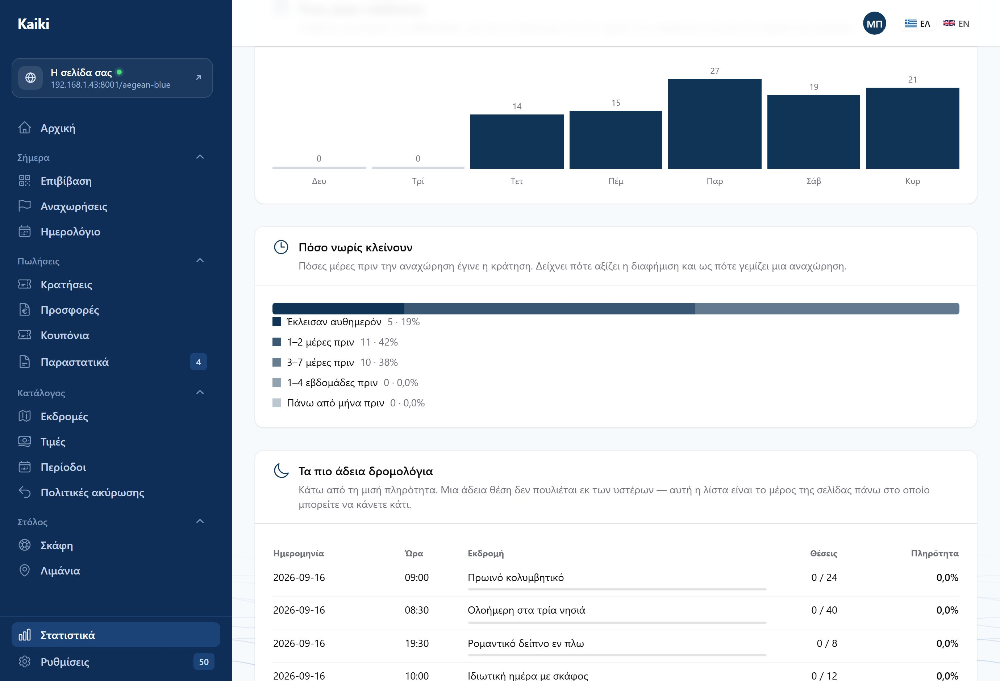
Όπου ο οδηγός γράφει «Ρυθμίσεις → …»: το κουμπί Ρυθμίσεις είναι κάτω κάτω στο αριστερό μενού και ανοίγει μια σελίδα με κάρτες. Πατάτε την κάρτα και μπαίνετε· στην κορυφή κάθε οθόνης υπάρχει «Πίσω στις ρυθμίσεις».

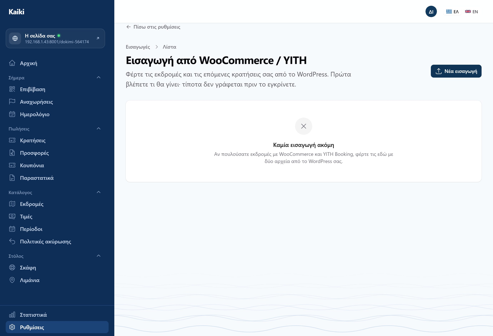
Ρυθμίσεις → Τι πήγε στραβά. Μία λίστα με κάθε αποτυχία που μπορεί να δει διοργανωτής — email που δεν έφυγε, ειδοποίηση που δεν παραδόθηκε, συγχρονισμός που έσπασε — με κουμπί επανάληψης εκεί όπου η επανάληψη κάνει κάτι. Όταν υπάρχει κάτι εκεί, φαίνεται και ως αριθμός πάνω στις Ρυθμίσεις στο μενού. Αν κάτι δεν δούλεψε στις δοκιμές σας, κοιτάξτε εδώ πριν το αναφέρετε: μπορεί να σας πει το γιατί.
Ο σκοπός αυτού του γύρου δεν είναι να επιβεβαιώσουμε ότι δουλεύει. Είναι να βρούμε πού δεν δουλεύει, όσο κοστίζει ακόμη λίγο να διορθωθεί.
| Δοκιμάζεται | Δεν δοκιμάζεται τώρα |
|---|---|
| Στήσιμο νέου διοργανωτή από το μηδέν, με τον οδηγό πρώτης ρύθμισης | Πραγματικές πληρωμές με κάρτα |
| Σκάφη, περίοδοι, πολιτικές ακύρωσης, εκδρομή σε πέντε βήματα, τιμές σε ευρώ | Το πρόσθετο WordPress |
| Οι σελίδες επισκεπτών, το φύλλο κράτησης στο κινητό, η ολοκλήρωση, η σελίδα της κράτησης | Αποστολή στην ΑΑΔΕ / myDATA |
| Πίνακας, ημερολόγιο, επιβίβαση με και χωρίς QR, ακυρώσεις, στατιστικά | SMS — κλειστά στην πρώτη φάση |
| Email (αποστολέας και απάντηση), προσκλήσεις, ρόλοι, «Μηνύματα» | Ναυλοσύμφωνο ως επίσημο έγγραφο |
| Ελληνικά και Αγγλικά σε κάθε οθόνη | Αντοχή σε φόρτο |
| Όρια πακέτων · Ανακοινώσεις · Υγεία πλατφόρμας · Πρότυπα πολιτικής · ΦΠΑ | Εισαγωγή απευθείας από ιστότοπο WordPress, με κλειδιά |
| Εισαγωγή από WooCommerce, με αρχεία · «Σύνδεση ως» διοργανωτής | Πώληση μέσω GetYourGuide |
Με τη σειρά. Τα πρώτα δύο είναι πιο σημαντικά από όλα τα υπόλοιπα μαζί.
Πλήρωμα που βλέπει τζίρο, τιμές ή «Ρυθμίσεις». Διαχειριστής που βλέπει τις κάρτες «Συνδέσεις» ή «Πληρωμές». Διοργανωτής που βλέπει δεδομένα άλλου διοργανωτή. Μια «Σύνδεση ως» που δεν άφησε γραμμή στο ιστορικό του διοργανωτή, ή που κράτησε πάνω από 60 λεπτά. Οτιδήποτε τέτοιο σταματάει τα πάντα.
Εκδρομή ή κράτηση που δεν ήταν στον έλεγχο, ή που εμφανίστηκε διπλή μετά από δεύτερη εισαγωγή. Email που έφτασε σε επιβάτη από εισαγόμενη κράτηση. Και οτιδήποτε σβήνεται όταν αλλάζει το πακέτο ενός διοργανωτή — δεν πρέπει να σβήνεται τίποτα.
Ο πίνακας λέει τρεις κρατήσεις και η λίστα δείχνει δύο. Η τιμή στη σελίδα διαφέρει από την τιμή στο ταμείο. Αυτά διαβρώνουν την εμπιστοσύνη σε όλα τα υπόλοιπα.
Πατήσατε και δεν συνέβη τίποτα. Email που δεν έφτασε. Αναχωρήσεις που δεν
εμφανίστηκαν. Κοιτάξτε πρώτα ότι τρέχει ο εργάτης ουράς — η
«Υγεία πλατφόρμας» στο /admin το δείχνει — και μετά τα «Τι πήγε
στραβά».
Αμετάφραστη λέξη, κακή διατύπωση, κείμενο που δεν χωράει. Δείτε και τις δύο γλώσσες — ο διακόπτης είναι πάνω δεξιά.
Ειδικά η επιβίβαση — και οι δύο οθόνες της, με και χωρίς σήμα, με και χωρίς QR — και ο πίνακας, που είναι όσα διαβάζονται όρθιος στην προβλήτα.
Τέσσερα πράγματα, και αρκούν. Χωρίς αυτά ένα εύρημα κοστίζει περισσότερο να αναπαραχθεί απ' ό,τι να διορθωθεί.
| Ποιος ήσασταν | Ο λογαριασμός και ο ρόλος. «Ως πλήρωμα», «ως επισκέπτης χωρίς σύνδεση» |
| Τι κάνατε | Τα βήματα, με τη σειρά, μέχρι το σημείο |
| Τι περιμένατε | Και τι έγινε αντ' αυτού |
| Η διεύθυνση | Αντιγράψτε την από τη μπάρα. Και στιγμιότυπο, αν φαίνεται |
Αναφέρετέ το. «Μου φάνηκε περίεργο» είναι έγκυρο εύρημα και συχνά το πιο χρήσιμο — τα προφανή σφάλματα βρίσκονται ούτως ή άλλως, ενώ αυτό που μπερδεύει έναν άνθρωπο την πρώτη φορά δεν το βλέπει ποτέ όποιος έχει συνηθίσει την οθόνη.
Αν τα δεδομένα μπερδευτούν και θέλετε καθαρή βάση, από τον φάκελο kaiki:
php artisan migrate:fresh --seed
Κάθε διοργανωτή που φτιάξατε, κάθε κράτηση, κάθε λογαριασμό συναδέλφου. Θα χρειαστεί να ξαναπεράσετε από το μέρος Γ. Συνεννοηθείτε πρώτα — μπορεί κάποιος άλλος να είναι στη μέση κάποιας δοκιμής.
Ό,τι βρεθεί σε αυτόν τον γύρο διορθώνεται πριν στηθεί πραγματικός server. Αυτό είναι και ο λόγος που το κάνουμε τοπικά πρώτα: ένα εύρημα εδώ κοστίζει μια διόρθωση· το ίδιο εύρημα μπροστά σε πελάτη κοστίζει τον πελάτη.